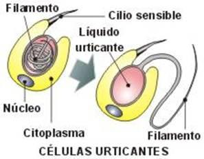
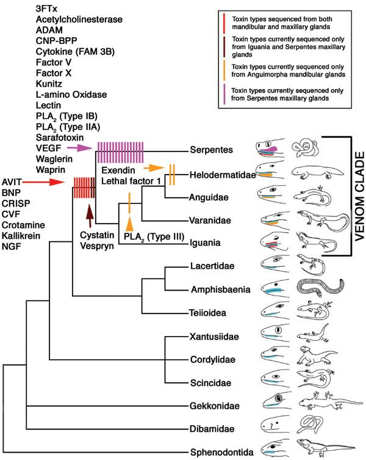
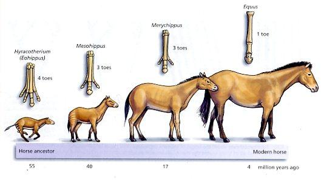

Hey satanás!!!!!1
Respuesta
Hola Vicens:
Veo que no obstante pedir que no nos prediquen nos envía una carta en la que pone de manifiesto su oposición a algo que ni conoce, y que además remata con una agresión personal. Poco elegante.
Yo me pregunto, cómo puede haber gente que menosprecia la palabra de Dios, tildándola de machista y misójina, no habiendo escudriñado las escrituras a fondo y comprenderlas….
¿Cómo puede haber personas que solo aceptan los que les dice su líder religioso? Vicens, la Biblia es clara al afirmar que la mujer debe estar bajo la autoridad del esposo (Efesios 5:22), que no puede enseñar en la Iglesia (1 Corintios 14:34-35). La mujer es tratada como botín de guerra (Jueces 21:10-12), en la ley ritual del Pentateuco dar a luz a una mujer generaba una inmundicia del doble de tiempo que dar a luz a un hombre (Levítico 12:1-5). Incluso el patriarca Lot no tuvo reparo en ofrecer a una turba violenta a sus hijas para que fuesen violadas a cambio de que sus huéspedes varones no recibieran daño alguno (Génesis 19:8), sin que esto genere ningún reproche por parte de los ángeles, ni del mismo Dios.
Creo que quien debe leer la Biblia sin las anteojeras de su credo particular debe ser usted.
Ustedes no hacen más que repetir y repetir la cantaleta de esos científicos que se creen sabiondos por formular teorías y más teorías. Dice la Biblia en Romanos 1:18 lo siguiente “…profesando ser sabios se hicieron necios” | ¡Ustedes se volvieron necios y su corazón está endurecido! ¿Acaso están ciegos para no entender que todo lo que les rodea tiene que tener algún diseñador? ¡Incluso la naturaleza y el universo tuvo que tener alguno!
No repetimos, y no es cantaleta. En verdad el credo religioso si es una cantaleta que no provee evidencia alguna. La naturaleza tiene un mecanismo que genera complejidad, llamado selección natural. Este proceso explica como, por ejemplo los cnidocistos, las células urticantes de las medusas se hicieron más potentes y eficaces para paralizar y atrapar una presa. Estas células aunque complejas aparecieron de otras más simples que solo atrapaban alimento pequeño -como plancton- pero sin arponearlo. La aparición de los peces y otros activos nadadores -animales más ágiles que las medusas - presionó para que toda variante de célula arponeadora, más rápida en su mecanismo de disparo, o con una sustancia urticante más efectiva apareciera. Estas variantes genéticas dejarían más descendencia y así gradualmente las medusas se hicieron potentes cazadoras sin tener ojos ni olfato.
Veo un problema con el diseño inteligente que usted propone. Según su posición Jesús diseñó las medusas. ¿Quiere decir que la medusa de caja Chironex fleckeri, que puede matar humanos con tan solo rozar sus tentáculos fue diseñada por el amoroso y buen Jesús?
Igual podríamos hablar de los dientes de las serpientes y de sus glándulas de veneno. Por medio de la selección natural explicamos que estas glándulas se modificaron gradualmente desde glándulas salivales, y los dientes tipo aguja hipodérmica evolucionaron de dientes normales. Según el diseño inteligente, el diseñador Jesús planeó este diseño en una mesa de dibujo celestial. Dígale esto a los que han perdido familiares o amigos por mordeduras de serpientes, y luego dígales que un dios de infinito amor y misericordia lo dispuso como mecanismo para llevar más rápido a su presencia a algunos mamíferos bípedos.

La verdad es que cada vez que he hablado con un ateo, siempre llega a tocar el tema ese de la evolución, pero nadie parece darse cuenta de que tiene una serie de problemas e incongruencias. Por ejemplo esa falta de especies de transición que dejó perplejo a Darwin. Esa teoría que no es más que una suposición y que no tiene fundamento alguno. Además si fuese cierto ello…¿por qué no se ha encontrado aún a un ser, mitad hombre, mitad mono, o a un mitad ave, mitad reptil, si es que dicen que las especies han evolucionado?
Pues claro que los ateos tocamos el tema de la evolución, porque la evidencia nos muestra como las especies llegaron a formarse. Quienes no se dan cuenta de las cosas son ustedes porque como sólo leen la Biblia, no están al tanto del descubrimientos paleontológicos. No hay un ser mitad mono y mitad hombre, pero si hay un serie de fósiles que muestran cambios desde seres tipo simios hasta los humanos modernos: Ardipithecus, Australopithecus, Homo habilis, Homo ergaster, etc., etc. ¿Qué no hay fósiles mitad ave y mitad reptil? ¿Sabe algo de Protarcheopteryx, Archaeopteryx, Caudipteryx, Rahonavis, Pedopenna, Epidendrosaurus, etc. etc?
Le invito a que consulte sobre los anteriores especies en la Wikipedia. La siguiente imagen muestra un resumen de la evolución de los caballos:
DIOS EXISTE QUIERAN O NO ¡NECIOS!. Él, en su infinito amor y misericordia les da la oportunidad de convertirse y ser lavados de sus pecados…Solo en Cristo podrá tener su vida sentido…Ustedes critican y critican a la religión sin tener en cuenta lo positivo que traen estas a la sociedad. La critican sin mirar “la viga de su ojo” , como dice la palabra de Dios. Ah y por cierto, dedíquese Señor Marcelo Huerta, a bajar de peso en vez de ir diciendo que Dios no existe….
Le agradecería si en lugar de llamarnos necios aportara pruebas. Añado que la existencia de Dios es independiente del hecho evolutivo. Cosa que la mayoría de luteranos, católicos, anglicanos, y judíos saben, ya que aceptan la evolución pero mantienen su creencia en un dios. Por otra parte, es absolutamente tonto pensar que un dios sabio en lugar de otorgar un perdón, tenga que condicionar este a un sacrificio morboso y sangriento, y más aún a tener que aceptar que un predicador de la provincia romana de Judea es dios hecho hombre y que su tortura en la cruz es por toda la humanidad.
Es absurdo pensar que un humanista bueno, que un judío o un ateo por más buenos que sean, arderán en un infierno eterno - sin que un fuego eterno contradiga las leyes de la termodinámica - por el solo hecho de no adherirse a la creencia de que el predicador de Judea es Dios. ¡Qué cosa tan absurda! Además nos piden que lo aceptemos sin la menor evidencia. ¡Habráse visto!
Por último, la recomendación que le hace a mi compañero editor, Marcelo, es abusiva. Más viniendo de una persona que sin percatarse en investigar el tema que desea refutar pone en evidencia su ignorancia al respecto. ¿Por qué no se preocupa usted por combatir su ignorancia, ya que esto es mucho más grave que unos kilos de más?
Comentarios
Comments powered by Disqus